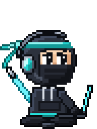
Er tippt mit
Wenn du schreibst, setzt sich Sudo an seinen Laptop. Nach Strg+S freut er sich, bei viel Rücktaste verdreht er die Augen. Er merkt sich nur, dass getippt wurde – nie, was.
Sudo ist ein kleiner Pixel-Ninja, der auf deiner Taskleiste wohnt. Er reagiert, wenn du tippst und speicherst, erinnert dich an Pausen und meldet sich, wenn es Neuigkeiten aus der IT gibt.
Deine IT hat ihn auf deinem PC installiert. Auf dieser Seite steht, was er kann, wie du ihn bedienst und was er über dich weiß.

Wenn du schreibst, setzt sich Sudo an seinen Laptop. Nach Strg+S freut er sich, bei viel Rücktaste verdreht er die Augen. Er merkt sich nur, dass getippt wurde – nie, was.
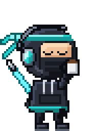
Nach längerer Zeit am Bildschirm schlägt Sudo eine kurze Pause vor: aufstehen, Augen entspannen, etwas trinken. Arbeitszeiten und feste Pausen stellst du unter „Arbeitstag & Pausen“ ein.
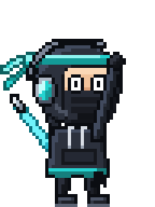
Störungen bei Microsoft 365, wichtige Sicherheitswarnungen des BSI und Mitteilungen deiner IT erscheinen als Sprechblase. Ein Klick auf die Blase öffnet die Details.
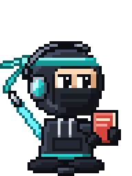
Mit Strg+Alt+S öffnest du „Frag Sudo“. Dahinter steckt die KI Claude. Die Funktion gibt es nur, wenn deine IT sie freigeschaltet hat.
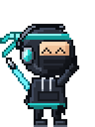
Drück das Mausrad auf Sudo, und die Ninja-Leiste klappt auf: PowerShell, Explorer, Task-Manager und was du selbst einträgst. Mit Strg+Alt+K öffnest du den Werkzeugkasten mit Passwort-Generator, Base64, JSON und mehr.
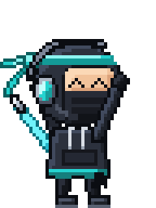
Schick Sudo zu einer Kollegin oder einem Kollegen: mit Post-it, Kaffee, Gummiente – oder zu einem kurzen Shuriken-Duell. Das geht nur ein paar Mal am Tag und nie während eines Meetings.
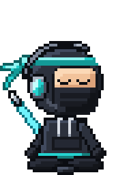
Sobald Teams oder Zoom ein Meeting zeigen, wird Sudo ruhig. Bei der Bildschirmfreigabe ist er nicht zu sehen, und im Vollbild versteckt er sich.
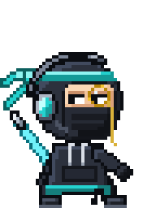
Ist die Festplatte verschlüsselt, der Virenschutz aktuell, die Firewall an? Steht ein Neustart nach Updates aus? Sudo zeigt es als Ampel unter „IT-Lage“, „Mein PC“ – und weist höchstens einmal am Tag auf ein Problem hin.
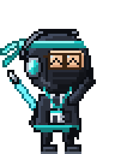
Ab und zu fragt Sudo kurz nach: Ist diese Mail echt? Was tun mit dem USB-Stick vom Parkplatz? Drei Fragen, eine Minute, mit Erklärung. Wer falsch liegt, lernt etwas – gezählt wird nur anonym.
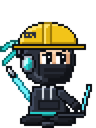
Teams zeigt nichts an, Outlook hängt, das WLAN zickt? Unter „Selbsthilfe“ prüft Sudo das Netzwerk und repariert Teams, Outlook oder OneDrive mit einem Klick – ohne Adminrechte. Bei Störungen zeigt er die Hinweise deiner IT.
Für gemeinsame Erfolge bekommt Sudo Geschenke: Hüte, Brillen, Krawatte – und übers Jahr verteilt saisonale Stücke wie Schal, Strohhut oder Hexenhut. Anprobieren kannst du sie über Rechtsklick auf das Sudo-Symbol und „Garderobe“.
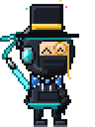
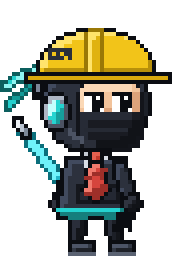
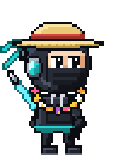
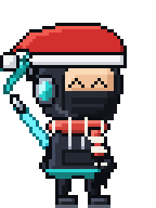
Klicks neben Sudo gehen ganz normal an das Programm darunter. Nur Sudo selbst reagiert auf die Maus.
| Ziehen | Sudo an einen anderen Platz tragen – auch auf einen anderen Bildschirm. |
|---|---|
| Schwungvoll loslassen | Sudo fliegt ein Stück und landet auf dem nächsten Fenster. |
| Anklicken | Streicheln. |
| Doppelklicken | Hier wohnen: Sudo kehrt immer wieder an diesen Platz zurück. |
| Mausrad drücken | Ninja-Leiste mit Schnellstart öffnen. |
| Symbol unten rechts | Anklicken holt Sudo zur Maus. Rechtsklick öffnet das Menü mit allen Funktionen und den Einstellungen. |
| StrgAltN | Erinnerung oder Notiz anlegen, z. B. „morgen 9 Uhr Angebot schicken“. |
|---|---|
| StrgAltS | Frag Sudo öffnen. |
| StrgAltK | Werkzeugkasten öffnen. |
Sudo läuft auf deinem PC. Zähler und Bildschirmzeit bleiben dort. Die Zentrale deiner IT sieht nur, ob und wann dein Sudo online war und – wenn eingeschaltet – die Ampel deines PCs. Nicht, wie viel du tippst oder womit du arbeitest.
Mit den echten Werten deines PCs: Rechtsklick auf das Sudo-Symbol und „Was weiß Sudo über mich?“. Dort kannst du auch eine Datenauskunft als Datei speichern.
Neue Outfits für Sudo. Bezahlt wird nicht mit Geld, sondern mit XP: Die sammelt Sudo, wenn du Bugs fängst, Pausen machst oder beim Quiz mitmachst. „Im Sudo ansehen“ öffnet den Skin-Store in deinem Sudo – dort kaufst und ziehst du den Skin an.
Der Link braucht Sudo ab Version 1.14. Ohne Sudo: Rechtsklick auf das Sudo-Symbol, „Skin“ und „Skin-Store …“. Deine IT kann eigene Skins dazulegen oder alle kostenlos machen.
Was sollte Sudo noch können? Schreib deine Idee auf – sie landet direkt bei der Entwicklung. Gefällt dir eine Idee aus der Liste, gib ihr deine Stimme: So sehen wir, was vielen wichtig ist.
Doppelklick auf einen ruhigen Platz, zum Beispiel am Bildschirmrand: Dort wohnt er dann und bleibt meistens zu Hause. In den Einstellungen unter „Verhalten“ schaltest du Kommentare zu Programmen, Töne und das Wandern zwischen Bildschirmen einzeln ab. Ganz beenden kannst du ihn über Rechtsklick auf das Symbol und „Beenden“.
Klick auf das Sudo-Symbol unten rechts im Infobereich – er kommt dann zur Maus. Bei Spielen, Videos oder Präsentationen im Vollbild versteckt er sich absichtlich. Auf dunklen Hintergründen hilft der helle Umriss: Einstellungen, „Allgemein“, „Umriss für dunkle Hintergründe“.
Zieh ihn einfach mit der Maus über die Bildschirmkante. Oder Rechtsklick auf das Symbol und „Auf Bildschirm …“. Unter „Allgemein“ legst du fest, auf welchem Bildschirm er nach dem Start erscheint.
Nein. Zähler wie Tastenanschläge oder die Bildschirmzeit bleiben auf deinem PC. Die Bildschirmzeit kannst du unter „Arbeitstag & Pausen“ auch ganz abschalten. Die Zentrale der IT sieht nur, ob dein Sudo online ist und – falls eingeschaltet – die Ampel deines PCs.
Gerätename, Windows-Benutzer, deinen Anmeldenamen (meist deine E-Mail-Adresse, damit dir zum Beispiel ein zugewiesenes Ticket direkt angezeigt werden kann), die Sudo-Version und ob er online ist. Hat die IT den Gerätezustand eingeschaltet, kommt die Ampel dazu: BitLocker, Virenschutz, Firewall, Updates, Neustart und freier Speicher – nur „grün, gelb, rot“ und wenige Zahlen wie „Update vor 12 Tagen“. Keine Dateien, keine Programme, keine Inhalte.
Nein. Die Zentrale zählt pro Frage nur, wie oft sie richtig oder falsch beantwortet wurde – ohne Gerät und ohne Namen. Deinen eigenen Stand sieht nur Sudo auf deinem PC. Das Quiz startest du jederzeit selbst über Rechtsklick auf das Symbol und „Security-Quiz …“.
Nach Updates werden Sicherheitslücken erst mit dem Neustart geschlossen. Deshalb bittet deine IT darum, meist mit einer Frist. Du entscheidest, wann: jetzt, in einer oder drei Stunden oder morgen früh. Sudo startet nie ohne deine Zustimmung neu und fragt nicht, während ein Meeting läuft. Bei „Jetzt neu starten“ hast du zwei Minuten zum Speichern und kannst noch abbrechen.
Deine Frage geht an die KI Claude und die Antwort kommt zurück. Der Verlauf liegt nur im Arbeitsspeicher und ist nach dem Schließen des Fensters weg. Läuft „Frag Sudo“ über die Zentrale, sieht die IT nur die Anzahl der Fragen und die Kosten, nicht die Fragen selbst.
Einstellungen, „Verhalten“, und „Besuche erlauben“ ausschalten. Dann taucht dein Sudo auch nicht mehr in der Liste der anderen auf.
Beenden geht jederzeit über das Menü. Deinstallieren kannst du ihn über das Unternehmensportal, wenn deine IT ihn dort als verfügbar anbietet – sonst hilft dir deine IT.
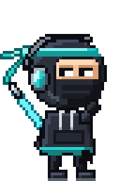
Wende dich an deine IT-Abteilung. Hilfreich ist ein Diagnose-Bericht: Einstellungen, „Info & Diagnose“, „Diagnose-Bericht kopieren“ – und in die Mail einfügen.